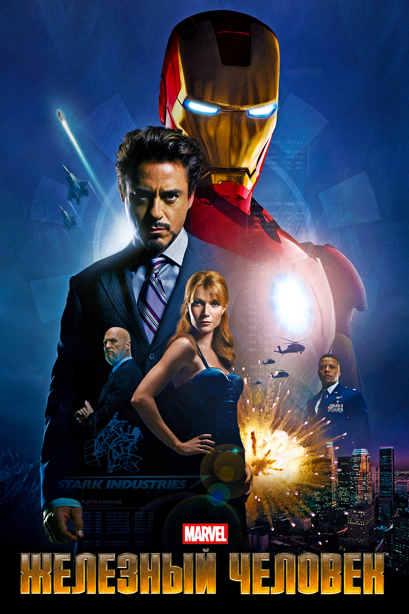
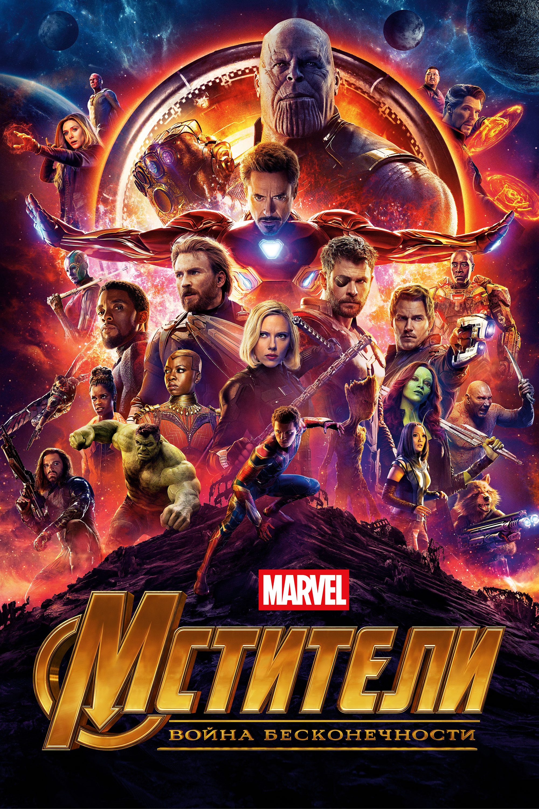

Железный человек
Миллиардер-изобретатель Тони Старк попадает в плен к Афганским террористам, которые пытаются заставить его создать оружие массового поражения. В тайне от своих захватчиков Старк конструирует высокотехнологичную киберброню, которая помогает ему сбежать. Однако по возвращении в США он узнаёт, что в совете директоров его фирмы плетётся заговор, чреватый страшными последствиями. Используя своё последнее изобретение, Старк пытается решить проблемы своей компании радикально...
Смотреть на КинопоискеОппенгеймер

"Оппенгеймер" — это историческая драма, режиссированная Кристофером Ноланом, которая рассказывает о жизни Роберта Оппенгеймера, известного как «отец атомной бомбы». Фильм погружает зрителя в сложный мир научных открытий, моральных дилемм и политических интриг, стоявших за созданием первого ядерного оружия во время Второй мировой. Сюжет фильма не ограничивается только событиями войны, но также затрагивает последствия для Оппенгеймера и его команды после окончания проекта.
Смотреть на КинопоискеМстители: Война бесконечности
Пока Мстители и их союзники продолжают защищать мир от различных опасностей, с которыми не смог бы справиться один супергерой, новая угроза возникает из космоса: безумный титан Танос. Межгалактический тиран преследует цель собрать все шесть Камней Бесконечности - артефакты невероятной силы, с помощью которых можно менять реальность по своему желанию. Всё, с чем Мстители сталкивались ранее, вело к этому моменту – судьба Земли никогда ещё не была столь неопределённой.
Смотреть на КинопоискеШерлок Холмс

Величайший в истории сыщик Шерлок Холмс вместе со своим верным соратником Ватсоном вступают в схватку, требующую нешуточной физической и умственной подготовки, ведь их враг представляет угрозу для всего Лондона.Особое внимание уделяется его отношениям с Ватсоном, который становится не только другом, но и партнером в расследованиях. Сюжет наполнен экшеном, захватывающими погонями и увлекательными головоломками, которые Холмс разгадывает с потрясающей логикой и остроумием.
Смотреть на КинопоискеО Кристиане Бейле
Ро́берт Джон Да́уни-мла́дший (родился 4 апреля 1965 года, Манхэттен, Нью-Йорк США) — американский актёр, продюсер и музыкант. Обладатель премий «Оскар» (2024), «Золотой глобус» (2001, 2010, 2024) Гильдии киноактёров США (2001,2024), «Сатурн» (1994, 2009, 2014, 2019) и Выбор критиков (2024).
Ранние годы: Роберт Джон Дауни младший родился в семье актера Роберта Дауни старшего и актрисы Элсинор Тори. Уже с детства он был окружен миром кино и искусства, что определило его будущую карьеру. В возрасте 5 лет он дебютировал в фильме своего отца Pound (1970).
Кинокарьера: Дауни младший начал свою карьеру в 1980-х годах, сыграв в нескольких фильмах и телесериалах. Одной из его первых заметных ролей была в фильме Меня зовут Чарли (1985), после чего он продолжил сниматься в разнообразных проектах, включая комедийные и драматические роли. Его слава значительно возросла после выхода фильма Аллилуйя (1987) и других проектов 90-х. Однако настоящая известность пришла к нему в 2000-х годах благодаря роли Тони Старка в фильме Железный человек (2008), который стал началом феномена киновселенной Marvel. Эта роль принесла ему мировую славу, а его исполнение было признано одним из лучших в жанре супергеройского кино.
Личная жизнь и проблемы: К сожалению, карьера Роберта Дауни младшего была омрачена проблемами с наркотиками и алкоголем. В 1990-х годах он несколько раз попадал в тюрьму за употребление наркотиков, что затруднило его карьерный рост. Однако, после нескольких лет борьбы с зависимостью, он смог вернуться в киноиндустрию и возродить свою карьеру. Роберт был дважды женат. Его первой супругой была актриса Дебора Фальсон (1992-2004). В 2005 году он женился на продюсере Сьюзан Левин. У них есть двое детей.
Награды: Дауни младший был номинирован на множество наград, включая премию «Оскар» за Оппенгеймер (2023), а также выиграл несколько Золотых глобусов, премий MTV и других наград за свои роли в кино. Его роль в Железном человеке и последующих фильмах Marvel принесла ему не только признание зрителей, но и высокую оценку критиков.
Филантропия и личные убеждения: Роберт активно участвует в благотворительности, поддерживая различные социальные и экологические инициативы. Он также известен своим позитивным взглядом на жизнь и личной трансформацией, став примером того, как можно преодолеть трудности и вернуться к успеху после поражений.